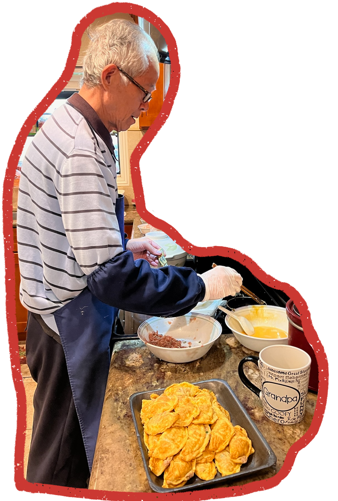

Egg Dumplings
A clever twist on traditional dumplings - delicate egg wrappers encase a savory filling of pork or chicken seasoned with ginger and scallions.
Listen to my mom share this recipe:
Ingredients
12 Servings
5
Large eggs
8 oz
Ground pork (or chicken)
2 tbsp
Shaoxing wine
2 tbsp
Light soy sauce
0.5 tsp
Sesame oil
0.25 tsp
Ground white pepper
2 tbsp
Water
2 tbsp
Scallion, minced
1 tsp
Ginger, minced
Equipment needed:
1 Large round stainless steel soup ladle
1 Vegetable oil and pastry brush
Instructions
- In a large bowl, beat 5 eggs for a good 2 minutes. Set aside next to the stove.
- In a separate bowl, mix the ground meat with the Shaoxing wine, light soy sauce, sesame oil, ground white pepper, water, minced scallion, and minced ginger. Whip everything in one direction for at least 3 minutes, until the filling is well combined and starts to take on a sticky texture. Set aside along with the egg.
- Pour a small amount of oil in a bowl, and grab a pastry brush. Set it alongside the egg and meat filling so everything is easily within reach.
- Now, turn your stove on to medium heat. Hold the ladle over the open flame (if you have an electric stove, it will be tricky to maintain even heat), and with the help of a pair of chopsticks, rub the ginger inside the ladle all over using quick motions for a good two minutes or so. This step treats the ladle, so the egg will not stick to it. I'm not sure why it works, but it does! If the egg still sticks to the ladle, repeat this process one more time.
- Once the ladle has been treated, brush the inside with some oil, pouring any excess oil back into the bowl. Add 1 tablespoon of the egg mixture, and immediately turn the ladle in a circular motion to spread the egg mixture into a circle about 3 inches in diameter. Add 1 teaspoon of the meat filling on one side of the circle, and use the chopsticks to ease the other half of the circle off of the ladle, folding it over to create a half moon shape. Gently tap the edges closed so the inner raw egg seals the dumpling shut. That's one! Repeat until you've used up all your egg and meat filling. This recipe makes 3 dozen egg dumplings.